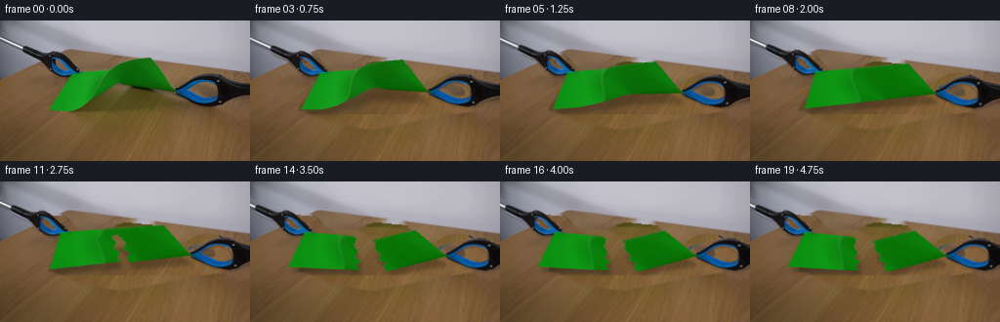
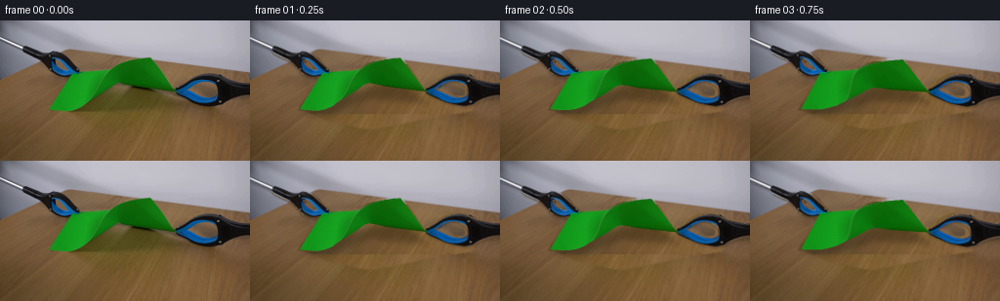
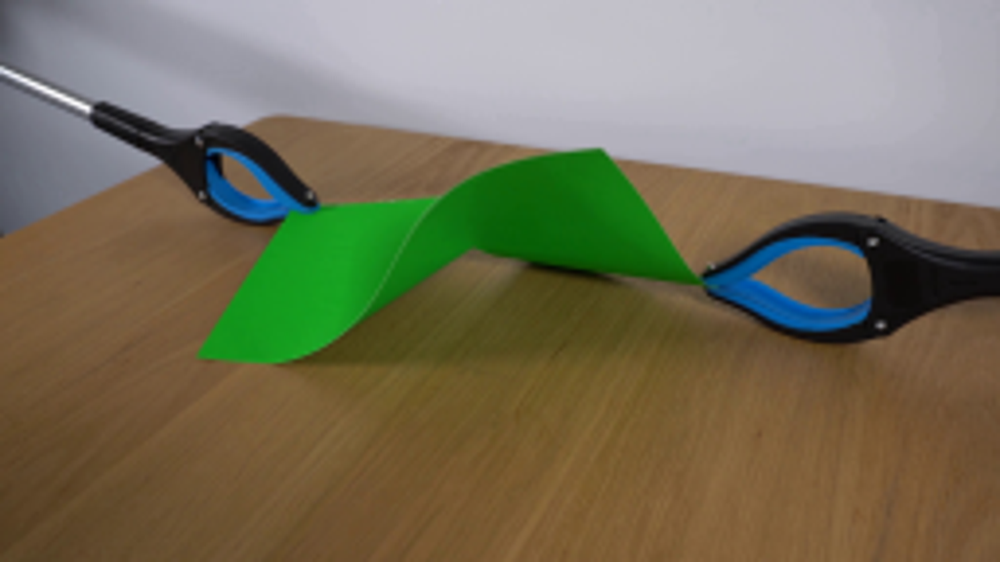
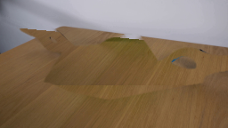
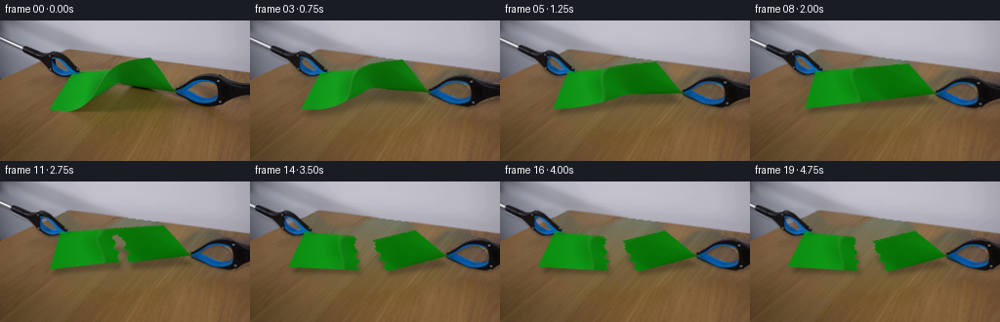
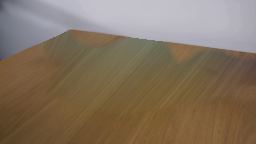
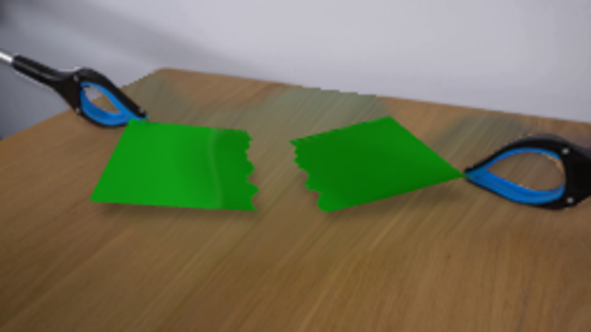

CODING AGENTS AS PIXEL WORLD MODELS
traex/GPT-6.1-Sol · 0045
点击播放 · 原生 RGB 像素
逐轮保存的候选
回放视频、检查图与代码变化。
每份候选均可单独播放。实际图片检查记录在下方工具轨迹中。
候选 01播放与检查图
点击播放 · 原生 RGB 像素


展开代码变化
--- 上一保存版本
+++ 本次保存版本
@@ -0,0 +1,199 @@
+from pathlib import Path
+import numpy as np
+from PIL import Image, ImageDraw, ImageFilter
+import cv2
+from scipy.interpolate import PchipInterpolator
+from scipy.ndimage import distance_transform_edt, gaussian_filter
+import artifact_io
+
+ROOT=Path(__file__).resolve().parent
+W,H=256,144
+S=3
+im=np.asarray(Image.open(ROOT/'first_frame.png').convert('RGB'))
+
+def poly_mask(points,holes=()):
+ a=Image.new('L',(W*4,H*4));d=ImageDraw.Draw(a)
+ d.polygon([(round(x*4),round(y*4)) for x,y in points], fill=255)
+ for hole in holes:d.polygon([(round(x*4),round(y*4)) for x,y in hole],fill=0)
+ return np.asarray(a.resize((W,H),Image.Resampling.LANCZOS)).astype(float)/255
+
+left_pts=[(-3,15),(23,25.8),(24,25.4),(31,28),(42,32.8),(49,32.2),(51,31.3),(57,32),(63,35.1),(70,41.4),(77,47.7),(81.5,51),(82,53),(80.3,54),(76,53.8),(72,56.4),(67,57.5),(61,57.2),(54.7,55),(50.5,52),(47,47),(43,42),(35,38.7),(29,36),(24,33.2),(22.7,30.6),(-3,19.9)]
+left_hole=[(54,39.4),(58.8,40.4),(62.7,43.3),(66.8,47.5),(69.5,50.1),(65.7,50.6),(61,49.3),(57.4,46.9),(55,43.9)]
+right_pts=[(179.6,69.7),(184,67.8),(190,63.9),(196,59.7),(202,56.3),(208,54.7),(216,54.7),(221,56),(225,58.5),(231,60.8),(239,62.6),(249,64.1),(260,64),(260,78),(249,79),(237,81.6),(229,85.1),(224,87),(218,87.4),(210,86),(201,83.9),(193,80.6),(185,77),(179.5,74.2)]
+right_hole=[(188.6,70.1),(194.1,66.1),(199.5,63.4),(204.8,61.9),(210.1,62.1),(214.4,63.4),(218.8,66.7),(221.8,71.5),(221.8,75.9),(218.7,78.4),(213.6,79.2),(207.8,78),(200.8,75.7),(194.6,73.2)]
+LM=poly_mask(left_pts,[left_hole]);RM=poly_mask(right_pts,[right_hole])
+# Recover a clean, stationary tabletop underneath the moving apparatus using
+# source-image wood samples, with the original visible scene left untouched.
+green=(im[:,:,1].astype(float)>im[:,:,0]*1.3)&(im[:,:,1].astype(float)>im[:,:,2]*1.5)&(im[:,:,1]>55)
+occ=np.maximum.reduce([LM,RM,green.astype(float)])
+shadowarea=poly_mask([(52,90),(75,80),(102,64),(126,63),(159,68),(194,76),(229,81),(227,92),(184,99),(123,111),(79,102)])
+remove=np.maximum(occ,shadowarea*.94)
+# First inpaint small shaft/background-wall areas.
+mask=(remove>.05).astype(np.uint8)*255
+mask=cv2.dilate(mask,np.ones((3,3),np.uint8))
+bg=cv2.inpaint(im,mask,5,cv2.INPAINT_TELEA).astype(float)
+yy,xx=np.mgrid[:H,:W]
+# Parallel to the grain, sample the unobstructed wood further down the table.
+mx=(xx-34).astype(np.float32);my=(yy+47).astype(np.float32)
+wood=cv2.remap(im,mx,my,cv2.INTER_CUBIC,borderMode=cv2.BORDER_REFLECT_101).astype(float)
+# For the lowest revealed areas choose another unoccluded sample.
+low=yy>95
+wood2=cv2.remap(im,(xx+26).astype(np.float32),(yy+20).astype(np.float32),cv2.INTER_CUBIC,borderMode=cv2.BORDER_REFLECT_101).astype(float)
+wood[low]=wood2[low]
+# correct the gradual light falloff between donor and destination regions
+wood*=1.03
+wood=np.clip(wood,0,255)
+table=yy>(29.1+.096*xx)
+soft=cv2.GaussianBlur(mask.astype(float)/255,(0,0),1.0)*table
+bg=bg*(1-soft[:,:,None])+wood*soft[:,:,None]
+# retain the original untouched pixels; make the fill fade only near its border
+blend=cv2.GaussianBlur(mask.astype(float)/255,(0,0),.7)
+bg=im*(1-blend[:,:,None])+bg*blend[:,:,None]
+
+# Extend only the paper's source colour, never background colours, across its
+# contour. This makes the moving paper antialiased without brown edge halos.
+_,inds=distance_transform_edt(~green,return_indices=True)
+tex=im[inds[0],inds[1]].astype(float)
+tex=cv2.resize(tex,(W*S,H*S),interpolation=cv2.INTER_CUBIC)
+BG=cv2.resize(bg,(W*S,H*S),interpolation=cv2.INTER_CUBIC)
+TOP=np.array([[0,74,54],[.1,82,52.6],[.25,100,51.7],[.35,109,51],[.45,118,46.6],[.55,125,43],[.7,135,40.3],[.8,143,39],[1,153.5,38]],float)
+BOT=np.array([[0,50.5,91],[.15,69,92.4],[.30,82.5,88.5],[.4,89.5,83],[.5,104,73.7],[.6,120.3,63.3],[.75,139,67],[1,179.5,72.7]],float)
+top=PchipInterpolator(TOP[:,0],TOP[:,1:],axis=0)
+bot=PchipInterpolator(BOT[:,0],BOT[:,1:],axis=0)
+def source(u,v):return top(u)*(1-v)[:,None]+bot(u)*v[:,None]
+
+def smooth(x):
+ x=np.clip(x,0,1);return x*x*(3-2*x)
+
+rng=np.random.default_rng(421)
+vs=np.linspace(0,1,37)
+# The fibrous tear wanders a little from side to side, rather than looking cut.
+seams=.535+.015*np.sin(vs*19)+rng.uniform(-.010,.010,len(vs))
+seams[0]=.535;seams[-1]=.545
+meshes=[]
+for side in [0,1]:
+ uv=[]
+ for j,v in enumerate(vs):
+ for k in range(15):
+ q=k/14
+ u=seams[j]*q if side==0 else seams[j]+(1-seams[j])*q
+ uv.append((u,v))
+ uv=np.array(uv)
+ src=source(uv[:,0],uv[:,1])
+ tris=[]
+ for j in range(36):
+ for k in range(14):
+ a=j*15+k;b=a+1;c=a+15;d=c+1
+ tris.extend([[a,b,d],[a,d,c]])
+ meshes.append((uv,src,np.array(tris)))
+
+# Rasterize a textured triangle surface with a single inverse coordinate map.
+def render_surface(uv,src,tris,dst,light):
+ h,w=H*S,W*S
+ mapx=np.full((h,w),-1,np.float32);mapy=mapx.copy();coverage=np.zeros((h,w),np.uint8)
+ for tri in tris:
+ sp=(src[tri]*S).astype(np.float32);dp=(dst[tri]*S).astype(np.float32)
+ xmin=max(0,int(np.floor(dp[:,0].min())));xmax=min(w-1,int(np.ceil(dp[:,0].max())))
+ ymin=max(0,int(np.floor(dp[:,1].min())));ymax=min(h-1,int(np.ceil(dp[:,1].max())))
+ if xmax<xmin or ymax<ymin:continue
+ affine=cv2.getAffineTransform(dp,sp)
+ y,x=np.mgrid[ymin:ymax+1,xmin:xmax+1]
+ m=np.zeros((ymax-ymin+1,xmax-xmin+1),np.uint8)
+ cv2.fillConvexPoly(m,np.round(dp-[xmin,ymin]).astype(np.int32),255)
+ sy=affine[1,0]*x+affine[1,1]*y+affine[1,2]
+ sx=affine[0,0]*x+affine[0,1]*y+affine[0,2]
+ valid=m>0
+ mapx[ymin:ymax+1,xmin:xmax+1][valid]=sx[valid]
+ mapy[ymin:ymax+1,xmin:xmax+1][valid]=sy[valid]
+ coverage[ymin:ymax+1,xmin:xmax+1][valid]=255
+ pixels=cv2.remap(tex,mapx,mapy,cv2.INTER_LINEAR,borderMode=cv2.BORDER_REPLICATE)
+ # Smoothing the fold's illumination as its curvature is pulled out.
+ target=np.zeros_like(pixels);target[:]=[4,134,4]
+ pixels=pixels*(1-light*.42)+target*(light*.42)
+ alpha=coverage.astype(float)/255
+ return pixels,alpha
+
+def tool_layer(mask,dx,dy):
+ # The mask includes real background holes in each gripper's blue loop.
+ a=cv2.resize(mask,(W*S,H*S),interpolation=cv2.INTER_CUBIC)
+ # Decontaminate partly covered boundary pixels against the local backdrop.
+ af=mask[:,:,None]
+ color=np.where(af>.03,(im.astype(float)-bg*(1-af))/np.maximum(af,.03),0)
+ color=np.clip(color,0,255)
+ color=cv2.resize(color,(W*S,H*S),interpolation=cv2.INTER_CUBIC)
+ mat=np.float32([[1,0,dx*S],[0,1,dy*S]])
+ a=cv2.warpAffine(a,mat,(W*S,H*S),flags=cv2.INTER_LINEAR,borderValue=0)
+ cp=cv2.warpAffine(color*cv2.resize(mask,(W*S,H*S),interpolation=cv2.INTER_CUBIC)[:,:,None],mat,(W*S,H*S),flags=cv2.INTER_LINEAR,borderValue=0)
+ return np.clip(cp,0,255),np.clip(a,0,1)
+
+frames=[im.copy()]
+for f in range(1,20):
+ tension=smooth(f/8)
+ crack=smooth((f-8)/4)
+ # A rapid final release followed by a lightly damped settling motion.
+ separation=0 if f<9 else (2+9*smooth((f-9)/5))
+ settle=smooth((f-12)/3)
+ damp=0 if f<13 else np.exp(-(f-13)/2.8)*np.sin((f-13)*1.85)
+ angle=settle*.185+damp*.035
+ dl=np.array([-7*tension-separation,-1.8*tension-.035*separation])
+ dr=np.array([10.5*tension+separation,2.2*tension+.12*separation])
+ layers=[];edges=[]
+ for side,(uv,src,tris) in enumerate(meshes):
+ u,v=uv.T
+ # initial bowed sheet smoothly approaches an open, tensioned surface
+ A=np.array([67.,52.2]);B=np.array([162.,44.]);C=np.array([190.,74.9]);D=np.array([56.,90.])
+ planar=(1-u)[:,None]*(1-v)[:,None]*A+u[:,None]*(1-v)[:,None]*B+u[:,None]*v[:,None]*C+(1-u)[:,None]*v[:,None]*D
+ dst=src*(1-tension)+planar*tension
+ seam=np.interp(v,vs,seams)
+ torn=smooth((crack-(1-v))/.13) if crack<.999 else np.ones_like(v)
+ if side==0:
+ weight=1-u/seam*(1-torn)
+ dst+=np.stack([-separation*weight,-.035*separation*weight],axis=1)
+ pivot=np.array([67.-separation,52.2-.035*separation])
+ theta=angle
+ else:
+ weight=(u-seam)/(1-seam)+(1-(u-seam)/(1-seam))*torn
+ dst+=np.stack([separation*weight,.12*separation*weight],axis=1)
+ pivot=np.array([190.+separation,74.9+.12*separation])
+ theta=-angle*.9
+ rot=np.array([[np.cos(theta),-np.sin(theta)],[np.sin(theta),np.cos(theta)]])
+ dst=(dst-pivot)@rot.T+pivot
+ # Small smooth curling of the freely torn margin, not global jitter.
+ edgew=(u/seam)**3 if side==0 else ((1-u)/(1-seam))**3
+ dst[:,1]+=edgew*settle*(1.0*np.sin(v*np.pi*1.5)+damp*.65)
+ pixels,a=render_surface(uv,src,tris,dst,tension)
+ layers.append((pixels,a))
+ edge=dst[np.arange(len(vs))*15+(14 if side==0 else 0)]
+ edges.append((edge,torn[np.arange(len(vs))*15]))
+ img=BG.copy()
+ # Cast soft shadows onto the wood, following both paper fragments.
+ paper_mask=np.maximum(layers[0][1],layers[1][1])
+ # Elevated paper initially casts a broader shadow than the flatter pieces.
+ sh=cv2.warpAffine(paper_mask,np.float32([[1,0,3*S],[0,.64,(37+2*(1-tension))*S]]),(W*S,H*S))
+ sh=cv2.GaussianBlur(sh,(0,0),(3.4-1.4*tension)*S)
+ img*=1-.25*sh[:,:,None]
+ for mask,delta in [(LM,dl),(RM,dr)]:
+ a=cv2.resize(mask,(W*S,H*S))
+ sha=cv2.warpAffine(a,np.float32([[1,0,(delta[0]+1)*S],[0,1,(delta[1]+2)*S]]),(W*S,H*S))
+ sha=cv2.GaussianBlur(sha,(0,0),1.15*S)
+ img*=1-.20*sha[:,:,None]
+ for pix,a in layers:img=img*(1-a[:,:,None])+pix*a[:,:,None]
+ # Subpixel pale-green fibre highlights appear only along the exposed tear.
+ fibre=np.zeros((H*S,W*S,3),np.uint8);fm=np.zeros((H*S,W*S),np.uint8)
+ for edge,opened in edges:
+ for j in range(len(vs)-1):
+ if opened[j]>.4 and opened[j+1]>.4:
+ p=tuple(np.round(edge[j]*S).astype(int));q=tuple(np.round(edge[j+1]*S).astype(int))
+ cv2.line(fm,p,q,94,1,cv2.LINE_AA)
+ cv2.line(fibre,p,q,(88,167,43),1,cv2.LINE_AA)
+ fa=fm.astype(float)/255
+ img=img*(1-fa[:,:,None])+np.array([82,163,38])*fa[:,:,None]
+ # Gripper jaws lie on top of the two clamped paper corners.
+ for mask,delta in [(LM,dl),(RM,dr)]:
+ pix,a=tool_layer(mask,*delta)
+ img=img*(1-a[:,:,None])+pix
+ frame=cv2.resize(np.clip(img,0,255).astype(np.uint8),(W,H),interpolation=cv2.INTER_AREA)
+ frames.append(frame)
+frames=np.stack(frames).astype(np.uint8)
+artifact_io.save(frames,ROOT)
+Image.fromarray(np.clip(bg,0,255).astype(np.uint8)).save(ROOT/'.tmp/background.png')
候选 02播放与检查图
点击播放 · 原生 RGB 像素

展开代码变化
--- 上一保存版本 +++ 本次保存版本 @@ -28,27 +28,36 @@ occ=np.maximum.reduce([LM,RM,green.astype(float)]) shadowarea=poly_mask([(52,90),(75,80),(102,64),(126,63),(159,68),(194,76),(229,81),(227,92),(184,99),(123,111),(79,102)]) remove=np.maximum(occ,shadowarea*.94) -# First inpaint small shaft/background-wall areas. +# Clean-plate reconstruction from the visible, unoccluded part of this same +# tabletop. Its grain direction and low-frequency illumination are retained. mask=(remove>.05).astype(np.uint8)*255 mask=cv2.dilate(mask,np.ones((3,3),np.uint8)) -bg=cv2.inpaint(im,mask,5,cv2.INPAINT_TELEA).astype(float) yy,xx=np.mgrid[:H,:W] -# Parallel to the grain, sample the unobstructed wood further down the table. -mx=(xx-34).astype(np.float32);my=(yy+47).astype(np.float32) +border=np.maximum(60.6-.447*xx,20.5+.1265*xx) +table=yy>=border +# An affine sample from the unobstructed lower strip follows the wood grain. +my=(111+yy*.215).astype(np.float32) +mx=(xx-.92*(my-yy)).astype(np.float32) wood=cv2.remap(im,mx,my,cv2.INTER_CUBIC,borderMode=cv2.BORDER_REFLECT_101).astype(float) -# For the lowest revealed areas choose another unoccluded sample. -low=yy>95 -wood2=cv2.remap(im,(xx+26).astype(np.float32),(yy+20).astype(np.float32),cv2.INTER_CUBIC,borderMode=cv2.BORDER_REFLECT_101).astype(float) -wood[low]=wood2[low] -# correct the gradual light falloff between donor and destination regions -wood*=1.03 -wood=np.clip(wood,0,255) -table=yy>(29.1+.096*xx) -soft=cv2.GaussianBlur(mask.astype(float)/255,(0,0),1.0)*table -bg=bg*(1-soft[:,:,None])+wood*soft[:,:,None] -# retain the original untouched pixels; make the fill fade only near its border -blend=cv2.GaussianBlur(mask.astype(float)/255,(0,0),.7) -bg=im*(1-blend[:,:,None])+bg*blend[:,:,None] +# Polynomial light correction, fitted only on real, object-free tabletop. +x=xx/W;y=yy/H +basis=np.stack([np.ones_like(x),x,y,x*x,x*y,y*y,x*x*y,x*y*y],axis=-1) +known=table&(mask==0)&(yy>border+5)&(yy>55) +# Match broad lighting rather than individual grain lines. +ref=cv2.GaussianBlur(im.astype(float),(0,0),4) +wr=cv2.GaussianBlur(wood,(0,0),4) +co=np.linalg.lstsq(basis[known],(ref-wr)[known],rcond=None)[0] +wood=np.clip(wood+basis@co,0,255) +# The smooth wall behind the apparatus, including the tabletop's rear edge. +wallknown=(yy<border-3)&(mask==0) +wallbasis=np.stack([np.ones_like(x),x,y,x*x,x*y,y*y,x*x*x,x*x*y,x*y*y,y*y*y],axis=-1) +wc=np.linalg.lstsq(wallbasis[wallknown],im[wallknown].astype(float),rcond=None)[0] +wall=np.clip(wallbasis@wc,0,255) +plate=np.where(table[:,:,None],wood,wall) +# Wide feathering avoids conspicuous outlines around the newly revealed wood. +dist=distance_transform_edt(mask==0) +blend=np.where(mask>0,1,np.exp(-dist*dist/(2*3.2**2))) +bg=im*(1-blend[:,:,None])+plate*blend[:,:,None] # Extend only the paper's source colour, never background colours, across its # contour. This makes the moving paper antialiased without brown edge halos.
候选 03播放与检查图

候选 04播放与检查图
点击播放 · 原生 RGB 像素
展开代码变化
--- 上一保存版本 +++ 本次保存版本 @@ -41,19 +41,21 @@ wood=cv2.remap(im,mx,my,cv2.INTER_CUBIC,borderMode=cv2.BORDER_REFLECT_101).astype(float) # Polynomial light correction, fitted only on real, object-free tabletop. x=xx/W;y=yy/H -basis=np.stack([np.ones_like(x),x,y,x*x,x*y,y*y,x*x*y,x*y*y],axis=-1) +basis=np.stack([np.ones_like(x),x,y,x*x,x*y,y*y],axis=-1) known=table&(mask==0)&(yy>border+5)&(yy>55) # Match broad lighting rather than individual grain lines. ref=cv2.GaussianBlur(im.astype(float),(0,0),4) wr=cv2.GaussianBlur(wood,(0,0),4) -co=np.linalg.lstsq(basis[known],(ref-wr)[known],rcond=None)[0] -wood=np.clip(wood+basis@co,0,255) +co=np.linalg.lstsq(basis[known],(ref-wr)[known].mean(axis=1),rcond=None)[0] +correction=np.clip(basis@co,-17,17) +wood=np.clip(wood+correction[:,:,None],0,255) # The smooth wall behind the apparatus, including the tabletop's rear edge. wallknown=(yy<border-3)&(mask==0) wallbasis=np.stack([np.ones_like(x),x,y,x*x,x*y,y*y,x*x*x,x*x*y,x*y*y,y*y*y],axis=-1) wc=np.linalg.lstsq(wallbasis[wallknown],im[wallknown].astype(float),rcond=None)[0] wall=np.clip(wallbasis@wc,0,255) -plate=np.where(table[:,:,None],wood,wall) +tablealpha=np.clip(yy-border+.5,0,1) +plate=wood*tablealpha[:,:,None]+wall*(1-tablealpha[:,:,None]) # Wide feathering avoids conspicuous outlines around the newly revealed wood. dist=distance_transform_edt(mask==0) blend=np.where(mask>0,1,np.exp(-dist*dist/(2*3.2**2)))
候选 05播放与检查图
可观测工具轨迹
实际执行的命令与返回图片。
命令 1exit 0
/bin/bash -lc 'ls -la && cat prompt.txt && cat GENERATION_RULES.md'
命令 2exit 0
/bin/bash -lc "cat artifact_io.py && python - <<'PY'
from PIL import Image
im=Image.open('first_frame.png'); im.resize((1024,576)).save('.tmp/first_big.png')
PY"命令 3exit 0
/bin/bash -lc "python - <<'PY'
import cv2,numpy as np
from PIL import Image
im=np.asarray(Image.open('first_frame.png'))
m=((im[:,:,1]>im[:,:,0]*1.3)&(im[:,:,1]>im[:,:,2]*1.5)&(im[:,:,1]>55)).astype(np.uint8)*255
cs,_=cv2.findContours(m,cv2.RETR_EXTERNAL,cv2.CHAIN_APPROX_SIMPLE)
c=max(cs,key=cv2.contourArea)
print(cv2.approxPolyDP(c,0.6,True).reshape(-1,2));print(len(c))
Image.fromarray(m).resize((1024,576)).save('.tmp/greenmask.png')
print('versions',cv2.__version__)
PY"命令 4exit 0
/bin/bash -lc "python - <<'PY'
import numpy as np,cv2
from PIL import Image,ImageDraw
im=Image.open('first_frame.png').resize((1024,576))
d=ImageDraw.Draw(im)
for y in range(10,110,10):
d.line((0,y*4,1024,y*4),fill=(255,255,255,90),width=1);d.text((1,y*4),str(y),fill='white')
for x in range(0,256,10):
d.line((x*4,0,x*4,576),fill=(255,255,255,90),width=1);d.text((x*4,400),str(x),fill='white')
im.save('.tmp/grid.png')
PY"命令 5exit 0
/bin/bash -lc "python - <<'PY' import importlib.util for m in ['scipy','cv2','PIL','numpy']: print(m, bool(importlib.util.find_spec(m))) PY"
命令 6exit 1
/bin/bash -lc "cat > generate.py <<'PY'
from pathlib import Path
import numpy as np
from PIL import Image, ImageDraw, ImageFilter
import cv2
from scipy.interpolate import PchipInterpolator
from scipy.ndimage import distance_transform_edt, gaussian_filter
import artifact_io
ROOT=Path(__file__).resolve().parent
W,H=256,144
S=3
im=np.asarray(Image.open(ROOT/'first_frame.png').convert('RGB'))
def poly_mask(points,holes=()):
a=Image.new('L',(W*4,H*4));d=ImageDraw.Draw(a)
d.polygon([(round(x*4),round(y*4)) for x,y in points], fill=255)
for hole in holes:d.polygon([(round(x*4),round(y*4)) for x,y in hole],fill=0)
return np.asarray(a.resize((W,H),Image.Resampling.LANCZOS)).astype(float)/255
left_pts=[(-3,15),(23,25.8),(24,25.4),(31,28),(42,32.8),(49,32.2),(51,31.3),(57,32),(63,35.1),(70,41.4),(77,47.7),(81.5,51),(82,53),(80.3,54),(76,53.8),(72,56.4),(67,57.5),(61,57.2),(54.7,55),(50.5,52),(47,47),(43,42),(35,38.7),(29,36),(24,33.2),(22.7,30.6),(-3,19.9)]
left_hole=[(54,39.4),(58.8,40.4),(62.7,43.3),(66.8,47.5),(69.5,50.1),(65.7,50.6),(61,49.3),(57.4,46.9),(55,43.9)]
right_pts=[(179.6,69.7),(184,67.8),(190,63.9),(196,59.7),(202,56.3),(208,54.7),(216,54.7),(221,56),(225,58.5),(231,60.8),(239,62.6),(249,64.1),(260,64),(260,78),(249,79),(237,81.6),(229,85.1),(224,87),(218,87.4),(210,86),(201,83.9),(193,80.6),(185,77),(179.5,74.2)]
right_hole=[(188.6,70.1),(194.1,66.1),(199.5,63.4),(204.8,61.9),(210.1,62.1),(214.4,63.4),(218.8,66.7),(221.8,71.5),(221.8,75.9),(218.7,78.4),(213.6,79.2),(207.8,78),(200.8,75.7),(194.6,73.2)]
LM=poly_mask(left_pts,[left_hole]);RM=poly_mask(right_pts,[right_hole])
# Recover a clean, stationary tabletop underneath the moving apparatus using
# source-image wood samples, with the original visible scene left untouched.
green=(im[:,:,1].astype(float)>im[:,:,0]*1.3)&(im[:,:,1].astype(float)>im[:,:,2]*1.5)&(im[:,:,1]>55)
occ=np.maximum.reduce([LM,RM,green.astype(float)])
shadowarea=poly_mask([(52,90),(75,80),(102,64),(126,63),(159,68),(194,76),(229,81),(227,92),(184,99),(123,111),(79,102)])
remove=np.maximum(occ,shadowarea*.94)
# First inpaint small shaft/background-wall areas.
mask=(remove>.05).astype(np.uint8)*255
mask=cv2.dilate(mask,np.ones((3,3),np.uint8))
bg=cv2.inpaint(im,mask,5,cv2.INPAINT_TELEA).astype(float)
yy,xx=np.mgrid[:H,:W]
# Parallel to the grain, sample the unobstructed wood further down the table.
mx=(xx-34).astype(np.float32);my=(yy+47).astype(np.float32)
wood=cv2.remap(im,mx,my,cv2.INTER_CUBIC,borderMode=cv2.BORDER_REFLECT_101).astype(float)
# For the lowest revealed areas choose another unoccluded sample.
low=yy>95
wood2=cv2.remap(im,(xx+26).astype(np.float32),(yy+20).astype(np.float32),cv2.INTER_CUBIC,borderMode=cv2.BORDER_REFLECT_101).astype(float)
wood[low]=wood2[low]
# correct the gradual light falloff between donor and destination regions
wood*=1.03
wood=np.clip(wood,0,255)
table=yy>(29.1+.096*xx)
soft=cv2.GaussianBlur(mask.astype(float)/255,(0,0),1.0)*table
bg=bg*(1-soft[:,:,None])+wood*soft[:,:,None]
# retain the original untouched pixels; make the fill fade only near its border
blend=cv2.GaussianBlur(mask.astype(float)/255,(0,0),.7)
bg=im*(1-blend[:,:,None])+bg*blend[:,:,None]
# Extend only the paper's source colour, never background colours, across its
# contour. This makes the moving paper antialiased without brown edge halos.
_,inds=distance_transform_edt(~green,return_indices=True)
tex=im[inds[0],inds[1]].astype(float)
tex=cv2.resize(tex,(W*S,H*S),interpolation=cv2.INTER_CUBIC)
BG=cv2.resize(bg,(W*S,H*S),interpolation=cv2.INTER_CUBIC)
TOP=np.array([[0,74,54],[.1,82,52.6],[.25,100,51.7],[.35,109,51],[.45,118,46.6],[.55,125,43],[.7,135,40.3],[.8,143,39],[1,153.5,38]],float)
BOT=np.array([[0,50.5,91],[.15,69,92.4],[.30,82.5,88.5],[.4,89.5,83],[.5,104,73.7],[.6,120.3,63.3],[.75,139,67],[1,179.5,72.7]],float)
top=PchipInterpolator(TOP[:,0],TOP[:,1:],axis=0)
bot=PchipInterpolator(BOT[:,0],BOT[:,1:],axis=0)
def source(u,v):return top(u)*(1-v)+bot(u)*v
def smooth(x):
x=np.clip(x,0,1);return x*x*(3-2*x)
rng=np.random.default_rng(421)
vs=np.linspace(0,1,37)
# The fibrous tear wanders a little from side to side, rather than looking cut.
seams=.535+.015*np.sin(vs*19)+rng.uniform(-.010,.010,len(vs))
seams[0]=.535;seams[-1]=.545
meshes=[]
for side in [0,1]:
uv=[]
for j,v in enumerate(vs):
for k in range(15):
q=k/14
u=seams[j]*q if side==0 else seams[j]+(1-seams[j])*q
uv.append((u,v))
uv=np.array(uv)
src=source(uv[:,0],uv[:,1])
tris=[]
for j in range(36):
for k in range(14):
a=j*15+k;b=a+1;c=a+15;d=c+1
tris.extend([[a,b,d],[a,d,c]])
meshes.append((uv,src,np.array(tris)))
# Rasterize a textured triangle surface with a single inverse coordinate map.
def render_surface(uv,src,tris,dst,light):
h,w=H*S,W*S
mapx=np.full((h,w),-1,np.float32);mapy=mapx.copy();coverage=np.zeros((h,w),np.uint8)
for tri in tris:
sp=(src[tri]*S).astype(np.float32);dp=(dst[tri]*S).astype(np.float32)
xmin=max(0,int(np.floor(dp[:,0].min())));xmax=min(w-1,int(np.ceil(dp[:,0].max())))
ymin=max(0,int(np.floor(dp[:,1].min())));ymax=min(h-1,int(np.ceil(dp[:,1].max())))
if xmax<xmin or ymax<ymin:continue
affine=cv2.getAffineTransform(dp,sp)
y,x=np.mgrid[ymin:ymax+1,xmin:xmax+1]
m=np.zeros((ymax-ymin+1,xmax-xmin+1),np.uint8)
cv2.fillConvexPoly(m,np.round(dp-[xmin,ymin]).astype(np.int32),255)
sy=affine[1,0]*x+affine[1,1]*y+affine[1,2]
sx=affine[0,0]*x+affine[0,1]*y+affine[0,2]
valid=m>0
mapx[ymin:ymax+1,xmin:xmax+1][valid]=sx[valid]
mapy[ymin:ymax+1,xmin:xmax+1][valid]=sy[valid]
coverage[ymin:ymax+1,xmin:xmax+1][valid]=255
pixels=cv2.remap(tex,mapx,mapy,cv2.INTER_LINEAR,borderMode=cv2.BORDER_REPLICATE)
# Smoothing the fold's illumination as its curvature is pulled out.
target=np.zeros_like(pixels);target[:]=[4,134,4]
pixels=pixels*(1-light*.42)+target*(light*.42)
alpha=coverage.astype(float)/255
return pixels,alpha
def tool_layer(mask,dx,dy):
# The mask includes real background holes in each gripper's blue loop.
a=cv2.resize(mask,(W*S,H*S),interpolation=cv2.INTER_CUBIC)
# Decontaminate partly covered boundary pixels against the local backdrop.
af=mask[:,:,None]
color=np.where(af>.03,(im.astype(float)-bg*(1-af))/np.maximum(af,.03),0)
color=np.clip(color,0,255)
color=cv2.resize(color,(W*S,H*S),interpolation=cv2.INTER_CUBIC)
mat=np.float32([[1,0,dx*S],[0,1,dy*S]])
a=cv2.warpAffine(a,mat,(W*S,H*S),flags=cv2.INTER_LINEAR,borderValue=0)
cp=cv2.warpAffine(color*cv2.resize(mask,(W*S,H*S),interpolation=cv2.INTER_CUBIC)[:,:,None],mat,(W*S,H*S),flags=cv2.INTER_LINEAR,borderValue=0)
return np.clip(cp,0,255),np.clip(a,0,1)
frames=[im.copy()]
for f in range(1,20):
tension=smooth(f/8)
crack=smooth((f-8)/4)
# A rapid final release followed by a lightly damped settling motion.
separation=0 if f<9 else (2+9*smooth((f-9)/5))
settle=smooth((f-12)/3)
damp=0 if f<13 else np.exp(-(f-13)/2.8)*np.sin((f-13)*1.85)
angle=settle*.185+damp*.035
dl=np.array([-7*tension-separation,-1.8*tension-.035*separation])
dr=np.array([10.5*tension+separation,2.2*tension+.12*separation])
layers=[];edges=[]
for side,(uv,src,tris) in enumerate(meshes):
u,v=uv.T
# initial bowed sheet smoothly approaches an open, tensioned surface
A=np.array([67.,52.2]);B=np.array([162.,44.]);C=np.array([190.,74.9]);D=np.array([56.,90.])
planar=(1-u)[:,None]*(1-v)[:,None]*A+u[:,None]*(1-v)[:,None]*B+u[:,None]*v[:,None]*C+(1-u)[:,None]*v[:,None]*D
dst=src*(1-tension)+planar*tension
seam=np.interp(v,vs,seams)
torn=smooth((crack-(1-v))/.13) if crack<.999 else np.ones_like(v)
if side==0:
weight=1-u/seam*(1-torn)
dst+=np.stack([-separation*weight,-.035*separation*weight],axis=1)
pivot=np.array([67.-separation,52.2-.035*separation])
theta=angle
else:
weight=(u-seam)/(1-seam)+(1-(u-seam)/(1-seam))*torn
dst+=np.stack([separation*weight,.12*separation*weight],axis=1)
pivot=np.array([190.+separation,74.9+.12*separation])
theta=-angle*.9
rot=np.array([[np.cos(theta),-np.sin(theta)],[np.sin(theta),np.cos(theta)]])
dst=(dst-pivot)@rot.T+pivot
# Small smooth curling of the freely torn margin, not global jitter.
edgew=(u/seam)**3 if side==0 else ((1-u)/(1-seam))**3
dst[:,1]+=edgew*settle*(1.0*np.sin(v*np.pi*1.5)+damp*.65)
pixels,a=render_surface(uv,src,tris,dst,tension)
layers.append((pixels,a))
edge=dst[np.arange(len(vs))*15+(14 if side==0 else 0)]
edges.append((edge,torn[np.arange(len(vs))*15]))
img=BG.copy()
# Cast soft shadows onto the wood, following both paper fragments.
paper_mask=np.maximum(layers[0][1],layers[1][1])
# Elevated paper initially casts a broader shadow than the flatter pieces.
sh=cv2.warpAffine(paper_mask,np.float32([[1,0,3*S],[0,.64,(37+2*(1-tension))*S]]),(W*S,H*S))
sh=cv2.GaussianBlur(sh,(0,0),(3.4-1.4*tension)*S)
img*=1-.25*sh[:,:,None]
for mask,delta in [(LM,dl),(RM,dr)]:
a=cv2.resize(mask,(W*S,H*S))
sha=cv2.warpAffine(a,np.float32([[1,0,(delta[0]+1)*S],[0,1,(delta[1]+2)*S]]),(W*S,H*S))
sha=cv2.GaussianBlur(sha,(0,0),1.15*S)
img*=1-.20*sha[:,:,None]
for pix,a in layers:img=img*(1-a[:,:,None])+pix*a[:,:,None]
# Subpixel pale-green fibre highlights appear only along the exposed tear.
fibre=np.zeros((H*S,W*S,3),np.uint8);fm=np.zeros((H*S,W*S),np.uint8)
for edge,opened in edges:
for j in range(len(vs)-1):
if opened[j]>.4 and opened[j+1]>.4:
p=tuple(np.round(edge[j]*S).astype(int));q=tuple(np.round(edge[j+1]*S).astype(int))
cv2.line(fm,p,q,94,1,cv2.LINE_AA)
cv2.line(fibre,p,q,(88,167,43),1,cv2.LINE_AA)
fa=fm.astype(float)/255
img=img*(1-fa[:,:,None])+np.array([82,163,38])*fa[:,:,None]
# Gripper jaws lie on top of the two clamped paper corners.
for mask,delta in [(LM,dl),(RM,dr)]:
pix,a=tool_layer(mask,*delta)
img=img*(1-a[:,:,None])+pix
frame=cv2.resize(np.clip(img,0,255).astype(np.uint8),(W,H),interpolation=cv2.INTER_AREA)
frames.append(frame)
frames=np.stack(frames).astype(np.uint8)
artifact_io.save(frames,ROOT)
Image.fromarray(np.clip(bg,0,255).astype(np.uint8)).save(ROOT/'.tmp/background.png')
PY
python generate.py"命令 7exit 0
/bin/bash -lc "sed -i 's/def source(u,v):return top(u)\\*(1-v)+bot(u)\\*v/def source(u,v):return top(u)*(1-v)[:,None]+bot(u)*v[:,None]/' generate.py python generate.py"
命令 8exit 0
/bin/bash -lc "python - <<'PY'
p='generate.py'
s=open(p).read()
a=s.index('# First inpaint small shaft/background-wall areas.')
b=s.index('# Extend only the paper',a)
s=s[:a]+'''# Clean-plate reconstruction from the visible, unoccluded part of this same
# tabletop. Its grain direction and low-frequency illumination are retained.
mask=(remove>.05).astype(np.uint8)*255
mask=cv2.dilate(mask,np.ones((3,3),np.uint8))
yy,xx=np.mgrid[:H,:W]
border=np.maximum(60.6-.447*xx,20.5+.1265*xx)
table=yy>=border
# An affine sample from the unobstructed lower strip follows the wood grain.
my=(111+yy*.215).astype(np.float32)
mx=(xx-.92*(my-yy)).astype(np.float32)
wood=cv2.remap(im,mx,my,cv2.INTER_CUBIC,borderMode=cv2.BORDER_REFLECT_101).astype(float)
# Polynomial light correction, fitted only on real, object-free tabletop.
x=xx/W;y=yy/H
basis=np.stack([np.ones_like(x),x,y,x*x,x*y,y*y,x*x*y,x*y*y],axis=-1)
known=table&(mask==0)&(yy>border+5)&(yy>55)
# Match broad lighting rather than individual grain lines.
ref=cv2.GaussianBlur(im.astype(float),(0,0),4)
wr=cv2.GaussianBlur(wood,(0,0),4)
co=np.linalg.lstsq(basis[known],(ref-wr)[known],rcond=None)[0]
wood=np.clip(wood+basis@co,0,255)
# The smooth wall behind the apparatus, including the tabletop's rear edge.
wallknown=(yy<border-3)&(mask==0)
wallbasis=np.stack([np.ones_like(x),x,y,x*x,x*y,y*y,x*x*x,x*x*y,x*y*y,y*y*y],axis=-1)
wc=np.linalg.lstsq(wallbasis[wallknown],im[wallknown].astype(float),rcond=None)[0]
wall=np.clip(wallbasis@wc,0,255)
plate=np.where(table[:,:,None],wood,wall)
# Wide feathering avoids conspicuous outlines around the newly revealed wood.
dist=distance_transform_edt(mask==0)
blend=np.where(mask>0,1,np.exp(-dist*dist/(2*3.2**2)))
bg=im*(1-blend[:,:,None])+plate*blend[:,:,None]
''' + s[b:]
open(p,'w').write(s)
PY
python generate.py"命令 9exit 0
/bin/bash -lc "python - <<'PY'
from PIL import Image
im=Image.open('frames/19.png');im.resize((1024,576)).save('.tmp/final_big.png')
PY"命令 10exit 0
/bin/bash -lc "python - <<'PY'
p='generate.py';s=open(p).read();s=s.replace('basis=np.stack([np.ones_like(x),x,y,x*x,x*y,y*y,x*x*y,x*y*y],axis=-1)','basis=np.stack([np.ones_like(x),x,y,x*x,x*y,y*y],axis=-1)');s=s.replace('co=np.linalg.lstsq(basis[known],(ref-wr)[known],rcond=None)[0]\\nwood=np.clip(wood+basis@co,0,255)','co=np.linalg.lstsq(basis[known],(ref-wr)[known].mean(axis=1),rcond=None)[0]\\ncorrection=np.clip(basis@co,-17,17)\\nwood=np.clip(wood+correction[:,:,None],0,255)');s=s.replace('plate=np.where(table[:,:,None],wood,wall)','tablealpha=np.clip(yy-border+.5,0,1)\\nplate=wood*tablealpha[:,:,None]+wall*(1-tablealpha[:,:,None])');open(p,'w').write(s)
PY
python generate.py"命令 11exit 0
/bin/bash -lc "python - <<'PY'
from PIL import Image
import numpy as np
from pathlib import Path
ims=[np.asarray(Image.open(p)) for p in sorted(Path('frames').glob('*.png'))]
assert len(ims)==20
assert np.stack(ims).shape==(20,144,256,3)
assert np.array_equal(ims[0],np.asarray(Image.open('first_frame.png')))
print('20 RGB frames verified; frame 00 identical.')
PY
which ffmpeg || true"视觉工具实际返回图片 1

视觉工具实际返回图片 2
视觉工具实际返回图片 3

视觉工具实际返回图片 4

视觉工具实际返回图片 5

视觉工具实际返回图片 6

视觉工具实际返回图片 7

视觉工具实际返回图片 8

视觉工具实际返回图片 9

保存候选 5 份；完成命令 11 次；可验证图片返回 9 张。原始 API 响应与完整日志保留在本地。